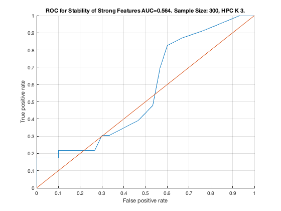

Feature Stability of GLL on TIE-Net with 300 samples.
unit_stability_type(300, 1, "TieNet")
Figure 5. ROC for Stability of Strong Features AUC=0.564. Sample Size: 300, HPC K 3. _____________________________________________________________________________________
Table 5. Feature Stability of HPC K 3 on TieNet with 300 samples.
__________________________________________________________________
SELECTED COUNTS: Strong=23, Weak=26, Irrelevant=4
TOTAL COUNTS: Strong=23, Weak=26, Irrelevant=4
Feature_Number Stability Type Path_Length N_MBS Equivalence
______________ _________ ____________ ___________ _____ ___________
23 ' 0.504 ' ' STRONG ' 3 0 21
22 ' 0.252 ' ' STRONG ' 2 0 21
21 ' 0.210 ' ' STRONG ' 1 0 21
20 ' 0.062 ' ' STRONG ' 3 0 18
42 ' 0.060 ' 'irrelevant' Inf 0 42
38 ' 0.042 ' ' weak ' 5 0 38
43 ' 0.040 ' 'irrelevant' Inf 0 43
19 ' 0.038 ' ' STRONG ' 2 0 18
28 ' 0.032 ' ' weak ' 5 0 28
37 ' 0.030 ' ' weak ' 6 0 37
27 ' 0.022 ' ' weak ' 6 0 27
32 ' 0.022 ' ' weak ' 8 0 32
45 ' 0.022 ' ' weak ' 7 0 45
11 ' 0.020 ' ' STRONG ' 4 0 7
18 ' 0.020 ' ' STRONG ' 1 0 18
40 ' 0.020 ' ' weak ' 3 0 40
53 ' 0.018 ' ' weak ' 5 0 53
6 ' 0.016 ' ' STRONG ' 3 0 1
33 ' 0.016 ' ' weak ' 8 0 33
35 ' 0.016 ' ' weak ' 7 0 35
4 ' 0.014 ' ' STRONG ' 4 0 1
29 ' 0.014 ' ' weak ' 11 0 29
49 ' 0.014 ' ' weak ' 6 0 49
12 ' 0.012 ' ' STRONG ' 1 18 12
15 ' 0.012 ' ' STRONG ' 3 36 12
26 ' 0.012 ' ' weak ' 5 36 26
30 ' 0.012 ' ' weak ' 10 36 30
2 ' 0.010 ' ' STRONG ' 2 54 1
5 ' 0.010 ' ' STRONG ' 3 72 1
9 ' 0.010 ' ' STRONG ' 3 144 7
16 ' 0.010 ' ' STRONG ' 2 216 12
17 ' 0.010 ' ' STRONG ' 4 288 12
34 ' 0.010 ' ' weak ' 8 288 34
3 ' 0.008 ' ' STRONG ' 4 360 1
10 ' 0.008 ' ' STRONG ' 4 540 7
14 ' 0.008 ' ' STRONG ' 3 675 12
46 ' 0.008 ' ' weak ' 7 675 46
13 ' 0.006 ' ' STRONG ' 2 810 12
48 ' 0.006 ' ' weak ' 6 810 48
52 ' 0.006 ' ' weak ' 4 810 52
7 ' 0.004 ' ' STRONG ' 1 1080 7
39 ' 0.004 ' ' weak ' 4 1080 39
41 ' 0.004 ' ' weak ' 3 1080 41
44 ' 0.004 ' 'irrelevant' Inf 1080 44
1 ' 0.002 ' ' STRONG ' 1 1296 1
8 ' 0.002 ' ' STRONG ' 2 1620 7
24 ' 0.002 ' ' weak ' 4 1620 24
25 ' 0.002 ' ' weak ' 6 1620 25
31 ' 0.002 ' ' weak ' 9 1620 31
47 ' 0.002 ' 'irrelevant' Inf 1620 47
50 ' 0.002 ' ' weak ' 5 1620 50
36 ' 0.000 ' ' weak ' 8 1620 36
51 ' 0.000 ' ' weak ' 4 1620 51